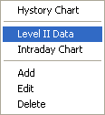
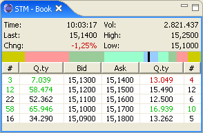
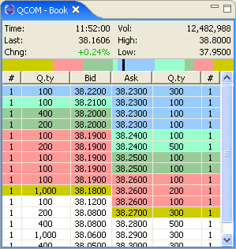
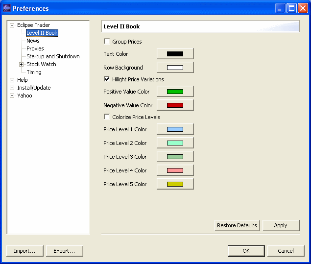

The Level II / Market Depth is shown using the menu that is opened with a righ-click on the Stock Watch window.

For the Italian market a 5-levels book is made available. The US market, instead, allows a multilevel book that includes all available buys and sells proposals.
 
The window's upper side display informations about the last trade price, the change percentage since the last closing price, the exchange volume and the maximum and minimum registered prices. The color strip just below represents the buying and selling pressure. Each bar is proportional to the shares quantity for the corresponding price level. The black middle bar represent a buying pressure (if it is far to the right) or selling pressure (if it is far to the right).
To change the symbol to display just drag the new symbol's row from the Stock Watch window and drop on the book window.
The book preference page allows the complete customization of the display modes. To open the preferences select Preferences from the Window menu, then select Level II Book.

Group Prices
This option allows to group the proposals by price so that each row corresponds to
a price and the quantity columns are representing the sum of all available
proposals. Note: this option works only if the complete book is made available
by the selected data source. For the Italian market this option has no effect.
Hilight Price Variations
Hilight with a different color the changes for the price and quantity since the
last reading. The increases are hilighted with the Positive Value Color
setting, the decreases are hilighted with the Negative Value Color setting.
Colorize Price Levels
Sets a different background color for each price level. The colors used are the
one selected for the Price Level x Color items.